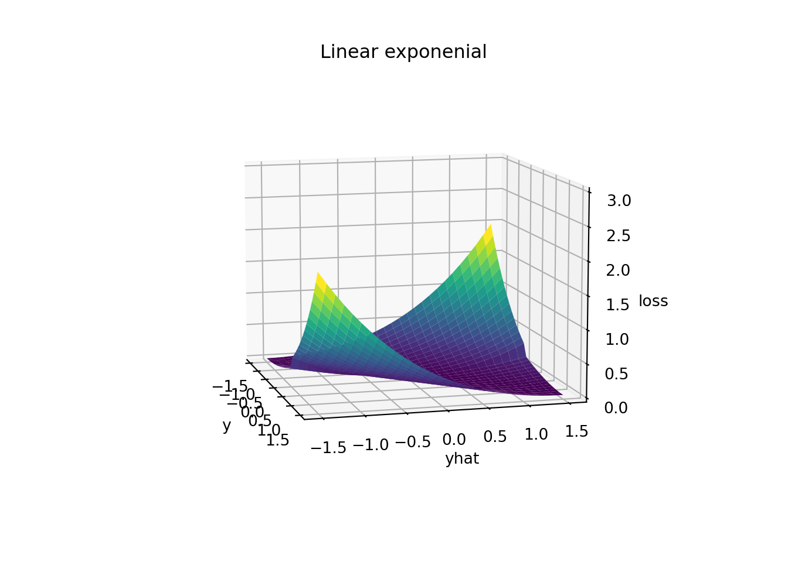
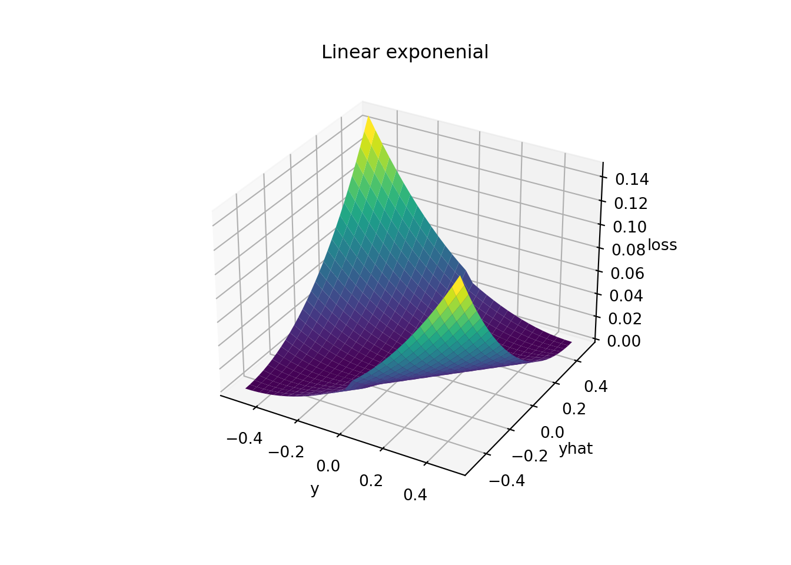

library('reticulate')
use_condaenv(condaenv = 'STOCK_MASTER', required = TRUE)import numpy as np
import pandas as pd
import matplotlib.pyplot as pltdef linex(y, yhat, alpha = 0.5):
error = y - yhat
return np.exp(alpha * np.sign(y) * error) - (alpha * np.sign(y)) * error - 1Note that ax.view_init(elev=30, azim=-60) are the
defaults that set the angle and rotation of viewing.
elev: elevation, the angle above/below the x-y
axis
azim: azimuth, rotation about the z axis
# Data
ys = np.linspace(-1.5, 1.5, 30)
yhats = np.linspace(-1.5, 1.5, 30)
y, yhat = np.meshgrid(ys, yhats)
z = linex(y, yhat)
# Plot
ax = plt.axes(projection='3d');
ax.plot_surface(y, yhat, z, rstride=1, cstride=1, cmap='viridis', edgecolor='none');
ax.set_xlabel('y');
ax.set_ylabel('yhat');
ax.set_zlabel('loss');
ax.set_title('Linear exponenial');
ax.view_init(10, -15);
ax.set_zlim(0, 3);
plt.show();
# Function
def plot_fun(gr=1, ax=None, **kwargs):
# Use the axes you have specified or gets the current axes from matplotlib
#ax = ax or plt.gca()
ax = plt.axes(projection='3d')
# Data
ys = np.linspace(gr*-1, gr, 30)
yhats = ys
y, yhat = np.meshgrid(ys, yhats)
z = linex(y, yhat)
ax.plot_surface(y, yhat, z, rstride=1, cstride=1, cmap='viridis', edgecolor='none')
ax.set_xlabel('y')
ax.set_ylabel('yhat')
ax.set_zlabel('loss')
ax.set_title('Linear exponenial')
return ax
# Plot
plot_fun(gr=0.5);
plt.show();